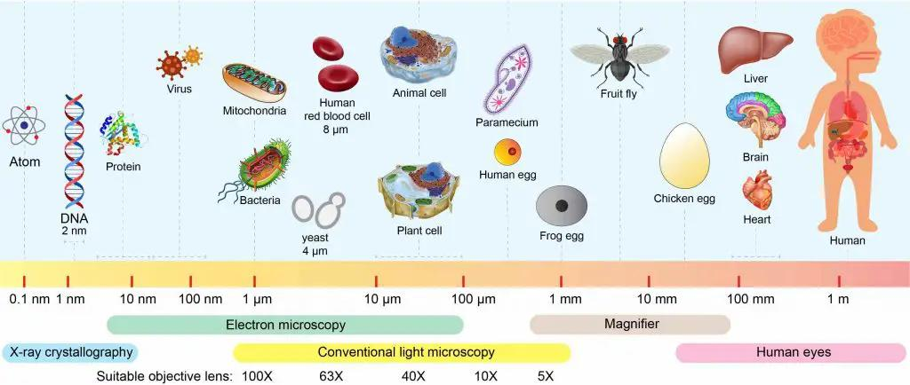
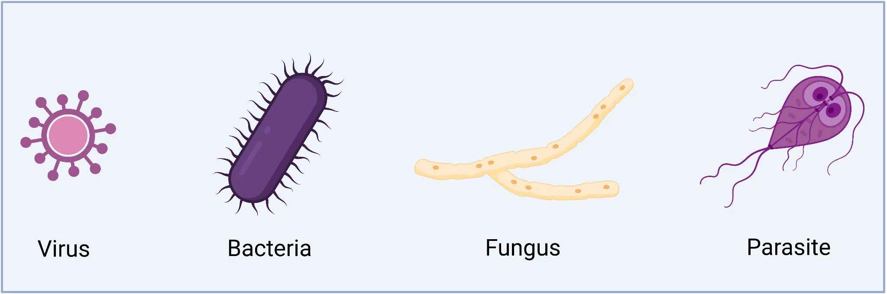
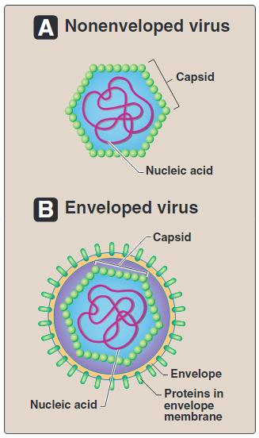
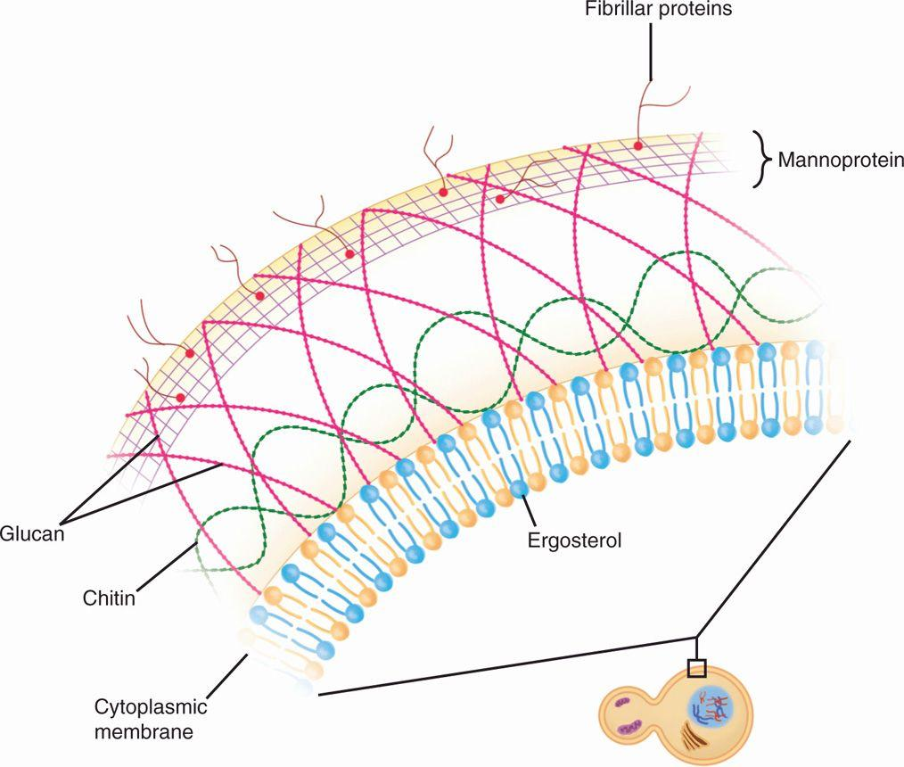
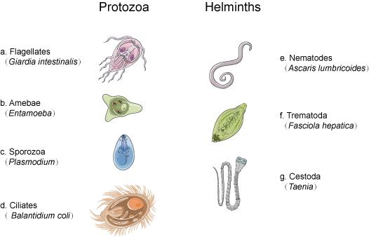
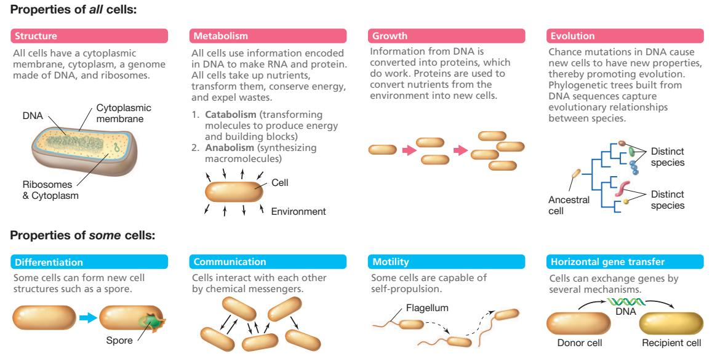
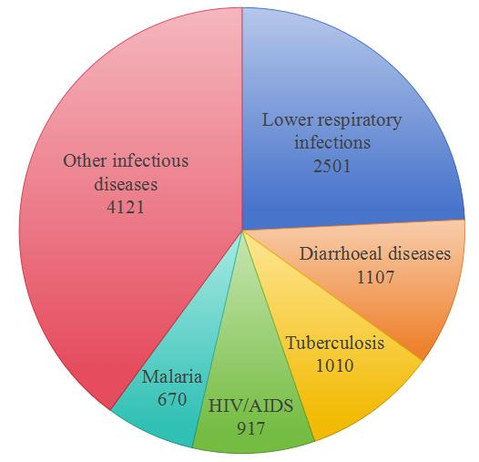

Four kinds of organism can infect a human being, and they are not variations on a theme — a virus and a tapeworm differ more from each other than a tapeworm differs from you. Before any of the detail can be useful, you need a map of what lives where on that spectrum, because the group an organism belongs to already tells you how it reproduces, what drug class might touch it, and how a laboratory will look for it.چهار نوع موجود میتوانند انسان را آلوده کنند، و اینها گونههای مختلف یک چیز نیستند — تفاوت یک ویروس با یک کرم کدو بیشتر از تفاوت آن کرم با شماست. پیش از آنکه هر جزئیاتی مفید باشد، به نقشهای از جایگاه هر کدام در این طیف نیاز دارید، چون گروهی که یک میکروارگانیسم به آن تعلق دارد از پیش به شما میگوید چگونه تکثیر میشود، چه دستهای از داروها ممکن است بر آن اثر کند و آزمایشگاه چگونه دنبالش خواهد گشت.
By the end of this Part you should be able toدر پایان این بخش باید بتوانید
Define a microbe and state the scale at which microbiology operates.میکروب را تعریف کنید و مقیاسی را که میکروبشناسی در آن کار میکند بیان نمایید.
Place viruses, bacteria, fungi and parasites on a structural spectrum, and say which are prokaryotic, which eukaryotic, and which are neither.ویروس، باکتری، قارچ و انگل را روی یک طیف ساختاری قرار دهید و بگویید کدام پروکاریوت، کدام یوکاریوت و کدام هیچکدام است.
Write a binomial name correctly and say why the convention matters.نام دوجزئی را درست بنویسید و بگویید چرا این قرارداد اهمیت دارد.
Explain what the normal flora is and why it is not merely harmless but necessary.توضیح دهید فلور طبیعی چیست و چرا نهتنها بیضرر بلکه ضروری است.
1.1What Is a Microbe, and What Is Microbiology?میکروب چیست و میکروبشناسی چیست؟
Definitionتعریف
Microbiology breaks into three Greek parts: micro — too small to be seen with the naked eye; bio — life; -ology — the study of. A microbe (microorganism) is therefore any organism too small to be resolved without a microscope; most, though not all, are single cells.میکروبشناسی از سه جزء یونانی ساخته شده: میکرو — آنقدر کوچک که با چشم غیرمسلح دیده نشود؛ بیو — زندگی؛ لوژی — مطالعهٔ. پس میکروب هر موجودی است که بدون میکروسکوپ قابل تفکیک نباشد؛ بیشترشان — اما نه همه — تکسلولیاند.

Fig 1.1 The scale of microbiology. Viruses occupy the tens-of-nanometre range, bacteria roughly 0.2–10 µm, and eukaryotic microbes from a few µm upwards. The limit of the unaided human eye is about 100 µm — which is precisely why none of this was known before the microscope.مقیاس میکروبشناسی. ویروسها در محدودهٔ دهها نانومتر، باکتریها تقریباً ۰.۲ تا ۱۰ میکرومتر و میکروبهای یوکاریوت از چند میکرومتر به بالا قرار دارند. حد تفکیک چشم غیرمسلح حدود ۱۰۰ میکرومتر است — و دقیقاً به همین دلیل پیش از اختراع میکروسکوپ هیچیک از اینها شناخته نشده بود.
Four facts frame the subject, and the lecture opens with them deliberately:چهار واقعیت چارچوب این درس را میسازند و این درس عامدانه با همینها آغاز میشود:
Microbes are the oldest life on Earth. Microbial fossils date back more than 3.5 billion years, to a time when the oceans regularly reached boiling point — hundreds of millions of years before any animal existed.میکروبها قدیمیترین شکل حیات روی زمیناند. فسیلهای میکروبی به بیش از ۳.۵ میلیارد سال پیش بازمیگردند، به زمانی که اقیانوسها مرتباً به نقطهٔ جوش میرسیدند — صدها میلیون سال پیش از پیدایش هر جانوری.
They are almost unimaginably numerous. Millions fit in the eye of a needle.تعدادشان تقریباً غیرقابلتصور است. میلیونها میکروب در سوراخ یک سوزن جا میگیرند.
Without microbes we could not eat or breathe. They fix nitrogen, drive the carbon and sulphur cycles, generate atmospheric oxygen, digest our food and produce vitamin K in our gut.بدون میکروبها نمیتوانستیم بخوریم یا نفس بکشیم. آنها نیتروژن تثبیت میکنند، چرخههای کربن و گوگرد را میگردانند، اکسیژن جو را تولید میکنند، غذای ما را هضم مینمایند و در رودهمان ویتامین K میسازند.
Without us they would be fine. The dependence is entirely one-way, which is a useful corrective to thinking of microbes primarily as pathogens.بدون ما هم مشکلی ندارند. این وابستگی کاملاً یکطرفه است و یادآوری خوبی است که میکروبها را در درجهٔ اول بیماریزا نپنداریم.
What counts as "alive"?چه چیزی «زنده» محسوب میشود؟
Cellular life — bacteria, fungi, parasites — shares a defined set of capabilities: it is bounded by a membrane, metabolises, grows, responds to its environment, and reproduces itself using its own machinery. Viruses do none of these independently. They possess genetic information but no metabolic apparatus, so they must borrow a host cell's ribosomes, enzymes and energy to replicate. This is why viruses sit awkwardly at the edge of the definition of life, and why no antibiotic works on a virus — antibacterial drugs attack structures and enzymes that viruses simply do not have.حیات سلولی — باکتری، قارچ، انگل — مجموعهٔ مشخصی از تواناییها دارد: با غشا محصور است، متابولیسم دارد، رشد میکند، به محیط پاسخ میدهد و با ماشینآلات خودش تکثیر میشود. ویروسها هیچکدام از اینها را مستقلاً انجام نمیدهند. اطلاعات ژنتیکی دارند اما دستگاه متابولیک ندارند، پس برای تکثیر باید ریبوزوم، آنزیم و انرژی سلول میزبان را قرض بگیرند. به همین دلیل ویروسها در لبهٔ تعریف حیات قرار میگیرند و به همین دلیل هیچ آنتیبیوتیکی روی ویروس اثر ندارد — داروهای ضدباکتری به ساختارها و آنزیمهایی حمله میکنند که ویروسها اصلاً ندارند.
Definitionتعریف
Medical microbiology is the subset of microbiology dealing with microorganisms that infect humans — viruses, bacteria, fungi and parasites. Its aims are to identify the organism, diagnose the disease it causes, determine its pathogenic mechanism, and treat and prevent recurrence.میکروبشناسی پزشکی زیرشاخهای از میکروبشناسی است که به میکروارگانیسمهای عفونیکنندهٔ انسان میپردازد — ویروس، باکتری، قارچ و انگل. هدف آن شناسایی میکروارگانیسم، تشخیص بیماری ناشی از آن، تعیین مکانیسم بیماریزایی و درمان و پیشگیری از عود است.
Identification rests largely on phenotypic features — shape, structure, mode of reproduction, physiology and metabolism. Those five words are the reason Parts 3–5 of this guide exist.شناسایی عمدتاً بر ویژگیهای فنوتیپی استوار است — شکل، ساختار، نحوهٔ تکثیر، فیزیولوژی و متابولیسم. همین پنج کلمه دلیل وجود بخشهای ۳ تا ۵ این جزوهاند.
1.2The Four Groups of Medical Microbesچهار گروه میکروب پزشکی
The lecture arranges the four groups along a single axis — from the structurally simplest to the most complex. Learn them in that order, because complexity predicts almost everything else: how the organism reproduces, whether it has its own metabolism to poison, and how big a target it presents to the immune system.این درس چهار گروه را روی یک محور واحد مرتب میکند — از سادهترین ساختار تا پیچیدهترین. آنها را به همین ترتیب یاد بگیرید، چون پیچیدگی تقریباً هر چیز دیگری را پیشبینی میکند: نحوهٔ تکثیر، وجود متابولیسم قابلمسمومکردن، و اندازهٔ هدفی که برای سیستم ایمنی فراهم میآورد.
Viruses→Bacteria→Fungi→Parasites simplest —————————————————————————— most complex

Fig 1.2 The four groups drawn to relative scale. Note that the size difference between a virus and a parasite spans five orders of magnitude — from tens of nanometres to, in the case of some tapeworms, ten metres.چهار گروه، رسمشده به نسبت اندازهٔ واقعی. توجه کنید که اختلاف اندازه بین یک ویروس و یک انگل پنج مرتبهٔ بزرگی است — از دهها نانومتر تا، در مورد برخی کرمهای کدو، ده متر.
Virusesویروسها

Fig 1.3A Non-enveloped ("naked") virus: nucleic acid within a protein capsid only. B Enveloped virus: the same core, wrapped in a host-derived lipid membrane studded with viral proteins. Enveloped viruses are the more fragile of the two — lipid is dissolved by soap, alcohol and drying, which is why alcohol hand rub works well against influenza and SARS-CoV-2 but poorly against norovirus.الف ویروس بدون پوشش («برهنه»): اسید نوکلئیک فقط درون کپسید پروتئینی. ب ویروس پوششدار: همان هسته، پیچیده در غشای لیپیدی گرفتهشده از میزبان که پروتئینهای ویروسی روی آن نشستهاند. ویروسهای پوششدار شکنندهترند — لیپید با صابون، الکل و خشکشدن حل میشود؛ به همین دلیل محلول الکلی دست علیه آنفولانزا و کرونا خوب عمل میکند اما علیه نوروویروس ضعیف است.
No cellular structure at all — no membrane-bounded cytoplasm, no ribosomes, no metabolism.اصلاً ساختار سلولی ندارند — نه سیتوپلاسم محصور در غشا، نه ریبوزوم، نه متابولیسم.
Genome is either DNA or RNA, never both, surrounded by a protein coat (capsid) and sometimes a lipid envelope.ژنوم یا DNA است یا RNA، هرگز هر دو، که در یک پوشش پروتئینی (کپسید) و گاهی یک پوشش لیپیدی قرار گرفته است.
They carry genetic information but require the host's cellular structures and enzymes to express and replicate it — obligate intracellular parasites in the strictest sense.اطلاعات ژنتیکی دارند اما برای بیان و همانندسازی آن به ساختارها و آنزیمهای سلول میزبان نیاز دارند — به دقیقترین معنا، انگلهای اجباری داخلسلولی.
Bacteriaباکتریها
Prokaryotic — no nucleus, no membrane-bound organelles. All bacteria of medical importance are eubacteria ("true bacteria"); the archaea, the other prokaryotic domain, contain no human pathogens.پروکاریوت — بدون هسته و بدون اندامک غشادار. تمام باکتریهای مهم پزشکی، یوباکتری («باکتری حقیقی») هستند؛ آرکیها، شاخهٔ پروکاریوتی دیگر، هیچ بیماریزای انسانی ندارند.
Shapes: sphere (coccus), rod (bacillus), corkscrew (spirochaete), and several intermediates — covered in detail in §3.2.شکلها: کروی (کوکسی)، میلهای (باسیل)، مارپیچی (اسپیروکت) و چند حالت میانی — بهتفصیل در بخش ۳.۲.
Cell wall and Gram staining — the single most important classification tool in the entire subject.دیوارهٔ سلولی و رنگآمیزی گرم — مهمترین ابزار طبقهبندی در کل این درس.
Divide by binary fission — one cell becomes two identical daughters. No mitosis, no meiosis, no sexual reproduction.با تقسیم دوتایی تکثیر میشوند — یک سلول به دو دختر همسان تبدیل میگردد. نه میتوز، نه میوز، نه تولیدمثل جنسی.
May carry plasmids: small circular DNA molecules separate from the chromosome, often carrying antibiotic-resistance or virulence genes (§4.4).ممکن است پلاسمید داشته باشند: مولکولهای کوچک DNA حلقوی جدا از کروموزوم که اغلب ژنهای مقاومت آنتیبیوتیکی یا حدت را حمل میکنند (بخش ۴.۴).
Fungiقارچها

Fig 1.4 The fungal cell wall: chitin and β-glucan over a membrane containing ergosterol rather than cholesterol. All three are absent from human cells, which is exactly why they are the targets of antifungal drugs — echinocandins block β-glucan synthesis, azoles and amphotericin B target ergosterol.دیوارهٔ سلولی قارچ: کیتین و بتاگلوکان روی غشایی که بهجای کلسترول حاوی ارگوسترول است. هر سه در سلول انسانی وجود ندارند و دقیقاً به همین دلیل هدف داروهای ضدقارچاند — اکینوکاندینها ساخت بتاگلوکان را مسدود میکنند و آزولها و آمفوتریسین B ارگوسترول را هدف میگیرند.
Eukaryotic — true nucleus, mitochondria, endoplasmic reticulum. Saprophytic (living on dead organic matter) or parasitic.یوکاریوت — هستهٔ حقیقی، میتوکندری، شبکهٔ آندوپلاسمی. ساپروفیت (تغذیه از مواد آلی مرده) یا انگلی.
Roughly 200,000 fungal species are known; about 100 have pathogenic potential; only a few are clinically important. The narrowing is worth noticing — fungi are overwhelmingly harmless.حدود ۲۰۰٬۰۰۰ گونهٔ قارچی شناخته شدهاند؛ حدود ۱۰۰ توان بیماریزایی دارند؛ و فقط تعداد اندکی از نظر بالینی مهماند. این محدودشدن قابلتوجه است — قارچها در اکثریت قاطع بیضررند.
Disease is classified by depth of invasion: cutaneous, subcutaneous, and systemic. Systemic mycoses split into true (primary) pathogens, which infect healthy hosts, and opportunists, which require immunosuppression.بیماری بر اساس عمق تهاجم طبقهبندی میشود: جلدی، زیرجلدی و سیستمیک. قارچهای سیستمیک به بیماریزاهای حقیقی (اولیه) که میزبان سالم را درگیر میکنند و فرصتطلبها که به سرکوب ایمنی نیاز دارند تقسیم میشوند.
Two non-infectious routes to harm: toxic metabolic products (mycotoxins such as aflatoxin) and allergenic spores (asthma, allergic bronchopulmonary aspergillosis).دو مسیر غیرعفونی آسیب: فراوردههای متابولیک سمی (مایکوتوکسینهایی مانند آفلاتوکسین) و هاگهای آلرژیزا (آسم، آسپرژیلوز برونکوپولمونر آلرژیک).
Parasitesانگلها

Fig 1.5 The two halves of medical parasitology. Protozoa (left) are single eukaryotic cells — flagellates, amoebae, sporozoa, ciliates. Helminths (right) are multicellular worms — nematodes (roundworms), trematodes (flukes), cestodes (tapeworms). The distinction matters clinically: protozoa multiply inside the host, so a small inoculum can become overwhelming disease; most helminths do not, so worm burden is set by exposure.دو نیمهٔ انگلشناسی پزشکی. تکیاختهها (چپ) سلولهای یوکاریوت منفردند — تاژکداران، آمیبها، اسپوروزوآ، مژکداران. کرمها (راست) پرسلولیاند — نماتودها (کرمهای گرد)، ترماتودها (کرمهای پهن برگی)، سستودها (کرمهای نواری). این تمایز بالینی مهم است: تکیاختهها داخل میزبان تکثیر میشوند، پس مقدار کمی میتواند به بیماری شدید بدل شود؛ بیشتر کرمها چنین نیستند و بار کرمی با میزان مواجهه تعیین میگردد.
Eukaryotic, either unicellular (protozoa) or multicellular (helminths).یوکاریوت، یا تکسلولی (تکیاخته) یا پرسلولی (کرم).
Size spans 4 µm to 10 m — the widest range of any group in medicine.اندازه از ۴ میکرومتر تا ۱۰ متر — گستردهترین بازه در میان تمام گروههای پزشکی.
Bodies range from amorphous (amoeba) to complex, with differentiated organs.بدن از بیشکل (آمیب) تا پیچیده و دارای اندامهای تمایزیافته متغیر است.
Distribution runs from remote regions to common community settings; transmission may be person to person or require complex multi-host life cycles with intermediate hosts and vectors.پراکندگی از مناطق دورافتاده تا محیطهای عادی اجتماعی را دربرمیگیرد؛ انتقال ممکن است فرد به فرد باشد یا به چرخهٔ زندگی پیچیده و چندمیزبانی با میزبان واسط و ناقل نیاز داشته باشد.
Millions of prevalent cases worldwide, with substantial mortality — malaria alone causes several hundred thousand deaths a year.میلیونها مورد شایع در جهان با مرگومیر قابلتوجه — تنها مالاریا سالانه چند صد هزار مرگ ایجاد میکند.
Table 1.1 The four groups compared — the table to know coldجدول ۱.۱ — مقایسهٔ چهار گروه؛ جدولی که باید کامل بدانید
Featureویژگی
Virusesویروسها
Bacteriaباکتریها
Fungiقارچها
Parasitesانگلها
Cell typeنوع سلول
Acellularغیرسلولی
Prokaryoticپروکاریوت
Eukaryoticیوکاریوت
Eukaryoticیوکاریوت
Nucleusهسته
Noneندارد
Nucleoid, no membraneنوکلئوئید، بدون غشا
True nucleusهستهٔ حقیقی
True nucleusهستهٔ حقیقی
Nucleic acidاسید نوکلئیک
DNA or RNAیا DNA یا RNA
DNA + RNAهر دو
DNA + RNAهر دو
DNA + RNAهر دو
Ribosomesریبوزوم
Noneندارد
70S (50S + 30S)۷۰S
80S۸۰S
80S۸۰S
Cell wallدیوارهٔ سلولی
None (capsid ± envelope)ندارد (کپسید ± پوشش)
Peptidoglycanپپتیدوگلیکان
Chitin, β-glucanکیتین، بتاگلوکان
Usually noneمعمولاً ندارد
Membrane sterolاسترول غشا
—
None (except Mycoplasma)ندارد (جز مایکوپلاسما)
Ergosterolارگوسترول
Cholesterolکلسترول
Own metabolismمتابولیسم مستقل
No — obligate intracellularندارد — اجباراً داخلسلولی
Simple division to complex life cyclesاز تقسیم ساده تا چرخههای پیچیده
Treated withدرمان با
Antiviralsضدویروسها
Antibacterialsضدباکتریها
Antifungalsضدقارچها
Antiparasiticsضدانگلها
Exampleمثال
Influenza, HIV, Variolaآنفولانزا، HIV، آبله
S. aureusG+, E. coliG−S. aureus، E. coli
Candida albicansCandida albicans
Plasmodium falciparumPlasmodium falciparum
High-Yieldنکتهٔ کلیدی
The classic exam question is simply "which of these is eukaryotic?" — and the answer is fungi (or parasites). Bacteria and archaea are prokaryotic; viruses are neither, because they are not cells at all. A second favourite: ribosome size. Bacteria are 70S, human and fungal cells are 80S; that difference is the entire reason aminoglycosides, tetracyclines and macrolides can kill a bacterium without killing you.سؤال کلاسیک امتحانی صرفاً این است: «کدامیک یوکاریوت است؟» — و پاسخ قارچها (یا انگلها) است. باکتریها و آرکیها پروکاریوتاند؛ ویروسها هیچکدام، چون اصلاً سلول نیستند. سؤال محبوب دوم: اندازهٔ ریبوزوم. باکتری ۷۰S و سلول انسانی و قارچی ۸۰S است؛ تمام دلیل اینکه آمینوگلیکوزیدها، تتراسایکلینها و ماکرولیدها باکتری را میکشند بیآنکه شما را بکشند، همین تفاوت است.
Carl Linnaeus is the father of modern taxonomy, and his two-part naming system is still in use. Every organism gets a genus and a species:کارل لینه پدر تاکسونومی مدرن است و نظام نامگذاری دوجزئی او همچنان استفاده میشود. هر موجود یک جنس و یک گونه میگیرد:
Staphylococcus(genus — capitalised)aureus(species — lower case) both italic, or underlined when handwritten
After first mention, the genus may be abbreviated to its initial: S. aureus. Use the full name the first time.پس از نخستین ذکر، جنس را میتوان به حرف اول خلاصه کرد: S. aureus. بار اول نام کامل را بنویسید.
Names are informative.Staphylo- = grape cluster, -coccus = berry, aureus = golden — so the name literally describes grape-like clusters of spheres forming golden colonies. Streptococcus = chains of spheres. Helicobacter pylori = spiral rod living at the pylorus. Reading names as descriptions is free revision.نامها اطلاعاترساناند.استافیلو = خوشهٔ انگور، کوکوس = دانه، آئورئوس = طلایی — پس این نام عیناً خوشههای کروی با کلنی طلایی را توصیف میکند. Streptococcus = زنجیرهای از کرهها. Helicobacter pylori = میلهٔ مارپیچی ساکن پیلور. خواندن نامها بهعنوان توصیف، مرور رایگان است.
Do not italicise informal or group names: staphylococci, streptococci, enterobacteria, the pneumococcus.نامهای غیررسمی یا گروهی را ایتالیک نکنید: استافیلوکوکها، استرپتوکوکها، انتروباکترها.
Exam Trapدام امتحانی
Writing Staphylococcus Aureus or staphylococcus aureus loses marks in short-answer questions where the examiner is checking nomenclature. Genus capitalised, species not, both italic. Always.نوشتن Staphylococcus Aureus یا staphylococcus aureus در سؤالات تشریحی که ممتحن نامگذاری را بررسی میکند نمره از دست میدهد. جنس با حرف بزرگ، گونه با حرف کوچک، هر دو ایتالیک. همیشه.
1.4The Normal Flora and the Human Microbiomeفلور طبیعی و میکروبیوم انسانی

Fig 1.6 The proportion of microbial to human cells in the body. Older textbooks quote 10:1; careful recounting puts the ratio closer to 1.3:1 — roughly 38 trillion bacteria to 30 trillion human cells. Either way, you are at best half human by cell count, and the microbial genome dwarfs your own in gene number.نسبت سلولهای میکروبی به انسانی در بدن. کتابهای قدیمیتر ۱۰ به ۱ میگویند؛ شمارش دقیقتر این نسبت را نزدیک به ۱.۳ به ۱ قرار میدهد — تقریباً ۳۸ تریلیون باکتری در برابر ۳۰ تریلیون سلول انسانی. در هر صورت، از نظر تعداد سلول دستبالا نیمی از شما انسان است و ژنوم میکروبی از نظر تعداد ژن بسیار بزرگتر از ژنوم خود شماست.
Definitionتعریف
The normal flora (normal microbiota) is the community of microorganisms that permanently or transiently colonises body surfaces in health, without causing disease. The microbiome strictly means the collective genomes of that community, although the two words are now often used interchangeably.فلور طبیعی (میکروبیوتای طبیعی) جامعهای از میکروارگانیسمهاست که در حالت سلامت بهطور دائم یا گذرا سطوح بدن را کلونیزه میکند بدون آنکه بیماری ایجاد کند. میکروبیوم بهمعنای دقیق یعنی مجموع ژنومهای آن جامعه، هرچند این دو واژه امروزه اغلب بهجای هم بهکار میروند.
Where it lives: skin, mouth, nasopharynx, gut (the overwhelming majority, in the colon), and the vagina. Where it does not: blood, cerebrospinal fluid, the lower respiratory tract, the bladder and urine, and deep tissue — these are normally sterile, and that fact is the foundation of clinical microbiology. A single colony of S. epidermidisG+ from a skin swab is meaningless; the same organism from a blood culture is either a contaminant or an infected line, and you must decide which.کجا زندگی میکند: پوست، دهان، نازوفارنکس، روده (اکثریت قاطع، در کولون) و واژن. کجا زندگی نمیکند: خون، مایع مغزی–نخاعی، دستگاه تنفسی تحتانی، مثانه و ادرار، و بافت عمقی — اینها بهطور طبیعی استریلاند و همین واقعیت، شالودهٔ میکروبشناسی بالینی است. یک کلنی S. epidermidis از سواب پوست بیمعناست؛ همان میکروارگانیسم از کشت خون یا آلودگی است یا کاتتر عفونی، و شما باید تصمیم بگیرید کدام.
Why it is beneficial, not merely tolerated:چرا سودمند است نه صرفاً تحملشده:
Colonisation resistance — the resident flora occupies attachment sites and consumes nutrients, physically denying a foothold to incoming pathogens.مقاومت کلونیزاسیونی — فلور مقیم، محلهای اتصال را اشغال و مواد غذایی را مصرف میکند و عملاً جای پایی برای بیماریزاهای واردشونده باقی نمیگذارد.
Nutrient synthesis — gut flora produce vitamin K and several B vitamins.تولید مواد مغذی — فلور روده ویتامین K و چند ویتامین گروه B میسازد.
Immune education — early microbial exposure drives development of gut-associated lymphoid tissue and regulatory T cells.آموزش سیستم ایمنی — مواجههٔ زودهنگام میکروبی، تکامل بافت لنفاوی رودهٔ و لنفوسیتهای T تنظیمی را پیش میبرد.
Metabolic work — fermentation of dietary fibre into short-chain fatty acids that nourish colonocytes.کار متابولیک — تخمیر فیبر غذایی به اسیدهای چرب کوتاهزنجیر که سلولهای کولون را تغذیه میکنند.
Clinical Correlation — what happens when you remove itارتباط بالینی — وقتی آن را حذف کنید چه میشود
Broad-spectrum antibiotics destroy colonisation resistance. Two consequences appear constantly on wards and in exams: Clostridioides difficileG+ colitis — a spore-forming anaerobe that survives the antibiotic (spores are not killed) and then overgrows the emptied colon, causing pseudomembranous colitis; and Candida albicans overgrowth — oral thrush or vulvovaginal candidiasis. Both are diseases of a missing flora rather than a newly acquired organism. Note also that this is the clearest argument against unnecessary antibiotic prescription.آنتیبیوتیکهای وسیعالطیف مقاومت کلونیزاسیونی را نابود میکنند. دو پیامد دائماً در بخش و امتحان دیده میشود: کولیت Clostridioides difficile — یک بیهوازی هاگساز که از آنتیبیوتیک جان سالم بهدر میبرد (هاگ کشته نمیشود) و سپس در کولونِ خالیشده رشد بیش از حد میکند و کولیت پسودوممبران ایجاد مینماید؛ و رشد بیش از حد Candida albicans — برفک دهانی یا کاندیدیاز ولوواژینال. هر دو بیماریِ فلورِ غایباند نه میکروارگانیسم تازهاکتسابی. این روشنترین استدلال علیه تجویز غیرضروری آنتیبیوتیک نیز هست.
1.5Infectious Disease Today — Why This Course Existsبیماریهای عفونی امروز — چرا این درس وجود دارد
Definitionتعریف
An infectious disease is a disease condition caused by the presence or growth of infectious microbes.بیماری عفونی وضعیتی بیمارگونه است که از حضور یا رشد میکروبهای عفونی ناشی میشود.

Fig 1.7 Global deaths by infectious cause. Lower respiratory infections, diarrhoeal disease, tuberculosis, HIV/AIDS and malaria dominate — and every one of them is preventable, treatable, or both.مرگهای جهانی به تفکیک علت عفونی. عفونتهای تنفسی تحتانی، بیماریهای اسهالی، سل، HIV/ایدز و مالاریا غالباند — و هر یک از آنها قابلپیشگیری، قابلدرمان یا هر دو است.Fig 1.8 Life expectancy, 1770–2019. Medieval life expectancy was about 30 years; the current world average is about 71. Most of that gain came not from treating disease but from preventing infection — clean water, sanitation, vaccination.امید به زندگی از ۱۷۷۰ تا ۲۰۱۹. امید به زندگی در قرون وسطی حدود ۳۰ سال بود؛ میانگین جهانی امروز حدود ۷۱ سال است. بیشتر این افزایش نه از درمان بیماری، بلکه از پیشگیری از عفونت حاصل شد — آب پاکیزه، بهداشت و واکسیناسیون.
In 2023, communicable diseases caused 10.33 million deaths — 17.2% of all deaths worldwide. For scale, that is roughly equal to all cancers (10.57 million, 17.6%) and second only to cardiovascular disease (19.16 million, 31.9%). And the figure excludes infection-driven cancers and liver disease — hepatitis-related liver cancer and cirrhosis add a further 1.07 million.در سال ۲۰۲۳ بیماریهای واگیر ۱۰.۳۳ میلیون مرگ — یعنی ۱۷.۲ درصد کل مرگهای جهان — ایجاد کردند. برای درک مقیاس، این تقریباً برابر با مجموع همهٔ سرطانهاست (۱۰.۵۷ میلیون، ۱۷.۶ درصد) و تنها پس از بیماریهای قلبی–عروقی (۱۹.۱۶ میلیون، ۳۱.۹ درصد) قرار میگیرد. و این رقم سرطانها و بیماریهای کبدی ناشی از عفونت را شامل نمیشود — سرطان کبد و سیروز مرتبط با هپاتیت ۱.۰۷ میلیون دیگر به آن میافزاید.
COVID-19 is the recent reminder that this is not a solved problem: an estimated 4.80 million deaths globally in 2020 and 7.89 million in 2021.کووید-۱۹ یادآوری تازهای است که این مسئله حلنشده باقی مانده: تخمیناً ۴.۸ میلیون مرگ در جهان طی سال ۲۰۲۰ و ۷.۸۹ میلیون در ۲۰۲۱.
Historical Anchorلنگر تاریخی
The lecture frames the whole historical section with a line from Charles Williams: "I think in order to move forward into the future, you need to know where you've been." That is the argument for Part 2 — every technique you will use in the laboratory was somebody's hard-won insight, and knowing the insight makes the technique impossible to forget.این درس تمام بخش تاریخی را با جملهای از چارلز ویلیامز قاب میگیرد: «فکر میکنم برای حرکت به سوی آینده، باید بدانید کجا بودهاید.» این همان استدلال بخش ۲ است — هر تکنیکی که در آزمایشگاه بهکار خواهید برد، بینشِ سختبهدستآمدهٔ کسی بوده، و دانستن آن بینش، فراموشکردن تکنیک را ناممکن میسازد.